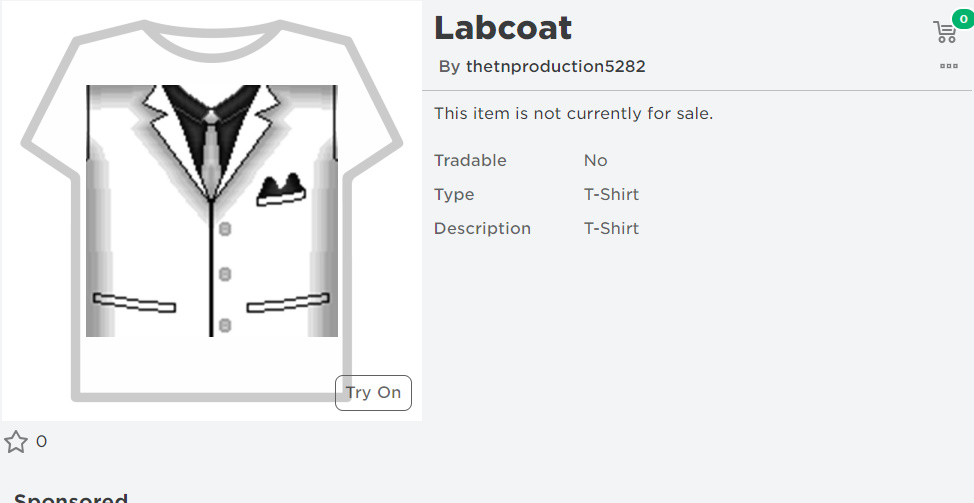

- Ngày 6 tháng 4 năm 2023, tài khoản mạo danh tên @thetnproduction5282 và anh ấy bắt đầu sao chép hình đại diện của @tn12348 và những gì @tn12348 được sở hữu.
- TIN ĐỒN: @tn12348 bị buộc tội làm điều xấu do có nhiều kẻ mạo danh. Giống như KiaPham1991, Mèo Simmy, Ruben Sim và 23Sebee.
- Vào tháng 8 năm 2023, @tn12348 đã thông báo trên kênh YouTube về kẻ mạo danh . Ở Discord, tn12348 và CamajorGaming nói với bạn bè với kẻ mạo danh.
- Ngày 24 tháng 11 năm 2023, tôi đã kết nối với kẻ mạo danh thành bạnh bè ở Roblox.
- Ngày 17 tháng 12 năm 2023, Kẻ mạo danh đặt tên @tn12348 nhưng kẻ đó không có nói gì hết. Đúng! Đây không phải là một điều xấu. Nhưng, sao anh ấy nói lạ ta? Tôi không biết? :)
- Ngày 7 tháng 1 năm 2024, (và ÔI TRỜI ĐẤT!!!) Kẻ mạo danh sao chép áo sơ mi phải trả phí bằng T-Shirt, Bạn có thể xem sự khác nhau giữa áo sơ mi labcoat của nhóm ở Roblox và áo thun mà kẻ mạo danh đã tạo. Đây là hành vi vi phạm nội quy của Roblox! Tôi đoán cái đó hành vì để tôi có thể hỏi nhóm hỗ trợ của Roblox, nhưng họ không trả lời.
|  |
- TIN ĐỒN: Có ai nói rằng @ROBLOXCODESIO2023 đã tạo tài khoản mạo danh. Anh ấy đã từng sao chép bài đăng của tn12348 kể từ tháng 6 năm 2023. Nó cho rằng ROBLOXCODESIO2023 đã tạo ra kẻ mạo danh. Anh ấy đã từng gửi yêu cầu kết bạn cho tôi và tôi chấp nhận nó là "bạn bè" ở Roblox để nói về việc anh ta có tạo hay không tài khoản đó. Bạn có thể tìm tin nhắn của anh ấy đã từng sao chép bài đăng của tn12348 tại đây.
- Ngày 2 tháng 2 năm 2024, Tôi thấy kẻ mạo danh chơi game của tn12348, tên là Flood Escape Trilogy, nên tôi vào. Tôi thắng hơn thành mạo danh :). Và ôi trời ơi, nó cũng là kẻ độc hại và cố tình bát nạt tôi vì tôi có nhiều kiến thức hơn :(.
- Ngày 3 tháng 2 năm 2024, Tôi và kẻ mạo danh chơi game tên "Build A Boat For Treasure". Kẻ mạo danh thắng hơn tôi, nhưng tôi nói với một người chơi nước ngoài về kẻ mạo danh, nên anh ấy biết :). Tôi thấy kẻ ấy nói rằng anh ấy là người Nga khi mấy người chơi hỏi họ ở nước nào.
- Vào buổi tối trong thời gian cùng lúc, kẻ mạo danh tạo game. Tôi thấy anh ấy sao chép miêu tả của game cũ của tn12348 tên là The Elevator Trilogy. Kẻ mạo danh nghĩ rằng đây là của The TN. Studios, nhưng anh ấy KHÔNG BAO GIỜ tham gia nhóm làm game kiểu Roblox Studio của tn12348. Và kẻ mạo danh là người mới và tn12348 không nhận ra anh ấy nhiều lắm. Khi tôi thử chơi với kẻ ấy, kẻ mạo danh nói rằng kẻ là ROBLOXCODESIO2023, nên làm cho tôi ngạc nhiên.
- Ngày 5 tháng 2 năm 2024, kẻ mạo danh liên tục gửi lời mới cho tôi để tôi chơi với kẻ đó. Khi tôi hỏi về hành vi của kẻ ấy, Kẻ mạo danh nói đúng rằng kẻ đó đã làm.
- Ngày 6 tháng 2 năm 2024, kẻ mạo danh (ngay ROBLOXCODESIO2023) lấy lại tài khoản chính sau khi anh ấy đặt tên thật của kẻ ấy. ROBLOXCODESIO2023 nói rằng cậu ấy sẽ không sử dụng tài khoản mạo danh nữa. Đã hết rồi...

~Kết thúc~